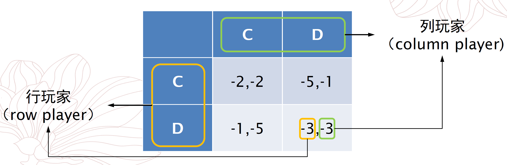

# 正则形式博弈
正则形式博弈 (normal-form game) 也称同时行动博弈 (simultaneous-move game) 或同时博弈 (simultaneous game), 可以用一个元组 (N,A,u) 描述：
- N={1,2,…,n} 是玩家 (player) 集合；
- A=∏i=1nAi 是所有玩家的动作向量集合，其中 Ai 是玩家 i 的动作 (action) 集合；
- u=(u1,u2,…,un) 是所有玩家的效用函数 (utility function) 向量，其中 ui:A→R 是玩家 i 的效用函数。
# 收益矩阵表示
收益矩阵 (payoff matrix) 是正则形式博弈的一种常用表示方法，用于表示两个玩家的情况。对于囚徒困境，其收益矩阵如下：

在收益矩阵中，若玩家的每一选择下的结果对应一行的所有情况，则称该玩家为一个行玩家，相应地对应列的玩家称为列玩家。在收益矩阵中，一般行玩家效用写在前，列玩家效用写在后。
“同时” 的含义不是物理上的时间相同，而是在玩家选择动作时不会获得额外信息（例如其他玩家的选择）。
# 基本假设
- 理性人假设：每个人都是理性的，即都希望最大化期望效用函数。
- 共同知识 (common knowledge) 假设：所有玩家都指导博弈的结构 (N,A,u), 所有玩家都知道所有玩家都知道博弈的结构 (N,A,u) ……
# 策略
策略 (strategy) si 是选择动作的（随机）方式，即动作集上的概率密度函数。若 si(ai) 是玩家 i 选择动作 ai 的概率，则 si(ai) 满足：
ai∈Ai∑si(ai)=1.
若存在 ai 使得 si(ai)=1, 则称 si 为纯策略 (pure strategy), 否则称为混合策略 (mixed strategy).
有关策略的一些常用符号包括：
- s−i=(s1,…,si−1,si+1,…,sn): 除玩家 i 以外的其他玩家的策略组合。
- Δ(X): 所有定义在集合 X 上的概率分布的集合。
- supp(si)={ai∣si(ai)>0}: 支集，策略 si 的非零概率动作集合。
# 解概念与均衡
博弈中的解是一种均衡 (equilibrium), 即没有玩家愿意改变策略。
# 纳什均衡
# 定义
若所有人都不能再提升效用，则称为均衡状态。其严谨定义如下：
若所有玩家的策略组合 (strategy profile, 也称策略剖面)
s∗=(s1∗,s2∗,…,sn∗)
满足
ui(si∗,s−i∗)≥ui(si,s−i∗)∀si∈Δ(Ai),∀u∈N,
其中
ui(s)=ui(si,s−i)=a∈A∑s(a)ui(a)=a∈A∑ui(a)i∈N∏si(ai).
则称 s∗ 是博弈的纳什均衡 (Nash equilibrium).
纳什均衡可以简单分类如下：
- 纯策略纳什均衡 (pure strategy Nash equilibrium): 在均衡 s∗ 中，每个 si∗ 都是纯策略；
- 混合策略纳什均衡 (mixed strategy Nash equilibrium): 非纯策略的纳什均衡。
# 最优回应
玩家 i 对其他所有玩家策略组合 s−i 的最优回应 (best response) 是使得玩家 i 自身效用最大的策略集合，即
BRi(s−i)=si∈Δ(Ai)argmaxui(si,s−i)={si∣∣∣∣∣ui(si,s−i)≥ui(si′,s−i)∀si′∈Δ(Ai)}.
# 优势策略
玩家 i 的策略 si 相较于 si′ 是
- 严格优势策略，若对于 ∀s−i, 都有 ui(si,s−i)>ui(si′,s−i).
- 弱优势策略，若对于 ∀s−i, 都有 ui(si,s−i)≥ui(si′,s−i), 且存在 s−i 使得 ui(si,s−i)>ui(si′,s−i).
若对于 ∀si′∈Δ(Ai), si 相较于 si′ 而言都是严格（弱）优势策略，则称 si 是一个严格（弱）优势策略。一般将弱优势策略简称为优势策略 (dominant strategy).
其实这个弱优势策略的定义挺鸡贼的，通过引入一个严格不等，使得弱优势策略具有唯一性，但是由于定义更加严格，其不一定存在。
性质 严格优势策略或弱优势策略是唯一的，且是纯策略。
这里的唯一性显然。下面证明其是纯策略。
对于严格优势策略，若其不是纯策略，即 ∣supp(si)∣>1, 则根据定义，∀ai∈supp(si) 和 s−i, 都有 ui(si,s−i)>ui(ai,s−i).
因为这里实际是可以将 ai 看作一个策略，显然其不如优势策略 si.
于是，
si(ai)ui(si,s−i)>si(ai)ui(ai,s−i).
对支集中的所有 ai 求和，得到
ai∈supp(si)∑si(ai)ui(si,s−i)>ai∈supp(si)∑si(ai)ui(ai,s−i),
即 ui(si,s−i)>ui(ai,s−i), 矛盾！
对于弱优势策略，若其不是纯策略，即 ∣supp(si)∣>1, 则根据定义，∀ai∈supp(si) 和 s−i, 都有 ui(si,s−i)≥ui(ai,s−i), 且 ∃s−i′ 使得 ui(si,s−i′)>ui(ai,s−i′). 仍按上述方式对支集中所有 ai 求和，得到
ai∈supp(si)∑si(ai)ui(si,s−i)≥ai∈supp(si)∑si(ai)ui(ai,s−i),
即 ui(si,s−i)≥ui(ai,s−i), 但取等号的条件是对 ∀ai∈supp(si) 都成立，这与弱优势策略中存在严格不等号的定义相矛盾。
因此，在正则博弈中，优势策略必定是纯策略。
# 优势策略纳什均衡
若在纳什均衡 s∗ 中，对于所有玩家 i, 都有 si∗ 是 i 的严格（弱）优势策略，则称 s∗ 是严格（弱）优势策略纳什均衡。
条件：
- 有限博弈 (finite game)
- ∣N∣ 有限，且 ∀i,Ai 有限
性质 若某有限博弈存在严格优势策略，则该策略是纯策略的纳什均衡，且是该博弈的唯一纳什均衡。
# 纳什均衡的存在性
借助布劳尔 (Brouwer) 不动点定理。
# 极小极大策略和极大极小策略
# 极小极大策略
极小极大策略 (minimax/minmax strategy) 是一种防御策略，即选择使对手效用函数最小化的策略：
siargmins−imaxui(si,s−i).
# 极大极小策略
极大极小策略 (maximin/maxmin strategy) 是一种进攻策略，即选择使自身效用函数最大化的策略：
siargmaxs−iminui(si,s−i).
# 零和博弈